🎧
Leitor Offline
Manual do Utilizador
Um leitor de música para o seu dispositivo, a funcionar sem internet. Simples, rápido e pessoal — sem contas, sem anúncios e sem enviar as suas músicas para lado nenhum.
Versão 1.1 · Outubro 2026
Índice
- 1. Introduçãopág. 3
- 2. Primeiros Passospág. 4
- 2.1 Abrir a bibliotecapág. 4
- 2.2 Tocar músicapág. 4
- 3. Navegação da Bibliotecapág. 5
- 3.1 Abas disponíveispág. 5
- 3.2 Pesquisapág. 5
- 4. Player Principalpág. 6
- 4.1 Cartão e capaspág. 6
- 4.2 Swipe entre faixaspág. 6
- 4.3 Fila de reproduçãopág. 7
- 4.4 Controlos na notificaçãopág. 7
- 4.5 Continuar de onde paroupág. 8
- 4.6 Volumepág. 8
- 4.7 Se uma música não tocarpág. 8
- 5. Funcionalidades Avançadaspág. 9
- 5.1 Equalizadorpág. 9
- 5.2 Velocidade de reproduçãopág. 10
- 5.3 Temporizador (sleep timer)pág. 10
- 5.4 Letras (.lrc, online e manual)pág. 11
- 5.5 Tradução para portuguêspág. 13
- 6. Personalizaçãopág. 14
- 6.1 Cores e temaspág. 14
- 6.2 Modelos de cartãopág. 15
- 7. Gestão da Bibliotecapág. 16
- 7.1 Favoritospág. 16
- 7.2 Remover e restaurarpág. 16
- 7.3 Editar metadadospág. 17
- 8. Backup e Estatísticaspág. 18
- 8.1 Exportar e importarpág. 18
- 8.2 Estatísticas de audiçãopág. 19
- 9. Atalhos de Tecladopág. 20
- 10. Instalação como PWApág. 21
- 11. Perguntas Frequentespág. 22
ℹ️ Nota sobre números de páginaOs números acima são indicativos. Depois de gerar o PDF, confirme as páginas reais e ajuste se necessário.
Leitor Offline — ManualÍndice
1. Introdução
O Leitor Offline é uma aplicação web progressiva (PWA) que toca música diretamente a partir dos ficheiros guardados no seu dispositivo. Não precisa de conta nem de subscrição, e a música toca sem internet.
Principais características
🎵 Reprodução offline
Toca ficheiros MP3, M4A, OGG e WAV guardados no dispositivo, sem depender de rede.
🎨 8 temas e 6 modelos
Personalização visual completa — cores, cartões do player, tudo configurável.
🎚️ Equalizador de 5 bandas
Ajuste de graves, médios e agudos com 8 presets prontos a usar.
📝 Letras e tradução
Letras sincronizadas: procura online, importa .lrc ou escreve à mão. Tradução para português.
📊 Estatísticas de audição
Top 5 mais ouvidas, gráfico dos últimos 7 dias, e histórico completo.
💾 Backup local
Exporta e importa favoritos, metadados, capas, estatísticas e definições num único ficheiro .json.
O que precisa
- Um telemóvel ou computador com browser moderno (Chrome, Edge, Safari, Firefox).
- Uma pasta com os seus ficheiros de música (MP3, M4A, OGG ou WAV).
- Opcional: internet apenas para procurar e traduzir letras. Ouvir música nunca precisa de rede.
🔒 Privacidade primeiroAs suas músicas, metadados e estatísticas ficam no dispositivo. Não há contas nem telemetria. As únicas ligações à internet são as que pedir: procurar letra envia o título e o artista, e traduzir envia o texto da letra.
Leitor Offline — Manual1. Introdução
2. Primeiros Passos
2.1 Abrir a biblioteca
Quando abrir a aplicação pela primeira vez, vai ver um ecrã de boas-vindas com um fone de ouvido e o nome do app.
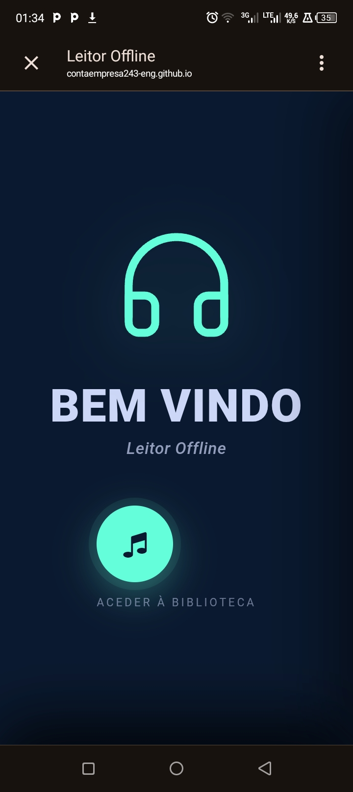
Ecrã inicial da aplicação
- Toque no botão circular verde com o ícone de música, na parte inferior.
- O sistema vai pedir permissão para aceder aos ficheiros. Aceite.
- Escolha a pasta onde tem as suas músicas guardadas.
- A aplicação vai ler todos os ficheiros de áudio dessa pasta (incluindo subpastas) e adicioná-los à biblioteca.
💡 DicaPode adicionar mais pastas em qualquer momento com o botão + no cabeçalho da biblioteca. A aplicação junta tudo numa única lista. O artista e o título são lidos automaticamente das tags dos ficheiros, em segundo plano.
2.2 Tocar música
Depois de importar, todas as músicas aparecem na aba Todas as músicas. Basta tocar em qualquer uma para começar a reprodução.
- O mini-player aparece automaticamente na parte inferior do ecrã.
- Toque no mini-player para abrir o player grande com a capa em destaque.
- Para pausar ou mudar de faixa, use os controlos por baixo do cartão.
Leitor Offline — Manual2. Primeiros Passos
3. Navegação da Biblioteca
A biblioteca organiza as músicas em quatro vistas principais, mais a lixeira, acessíveis através das abas no topo do ecrã.
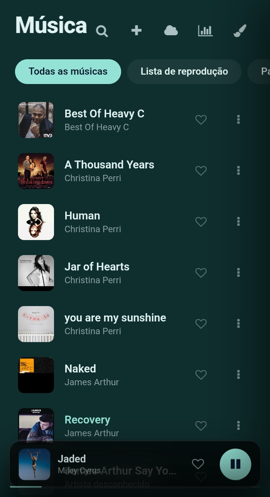
Cabeçalho com abas e lista de músicas
3.1 Abas disponíveis
| Aba | O que mostra |
|---|
| Todas as músicas | Lista completa, ordenada alfabeticamente |
| Lista de reprodução | As músicas que marcou com o coração |
| Pastas | Agrupamento por pasta física do dispositivo |
| Recentes | Últimas 50 músicas que ouviu |
| Removidas | Lixeira — só aparece quando há músicas removidas |
3.2 Pesquisa
Toque no ícone de lupa no cabeçalho para abrir a barra de pesquisa. Pode pesquisar por título ou por artista — a lista filtra enquanto escreve.
Como fecharToque novamente na lupa ou apague o texto. A lista volta ao normal automaticamente.
Leitor Offline — Manual3. Navegação
4. Player Principal
O player principal é onde a música toca. Tem três elementos principais: o cartão com a capa, os controlos inferiores, e a barra de ferramentas superior.
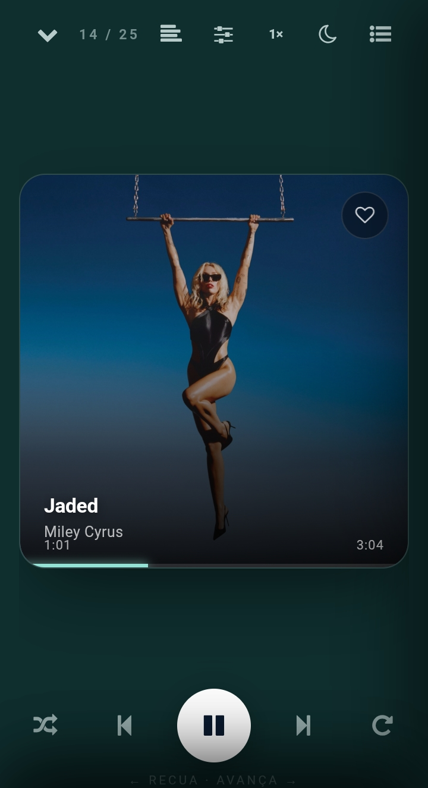
Player principal com o cartão horizontal
4.1 Cartão e capas
O cartão mostra a capa da música a tocar. A aplicação extrai automaticamente a capa embutida nos ficheiros MP3 e M4A — não precisa de fazer nada.
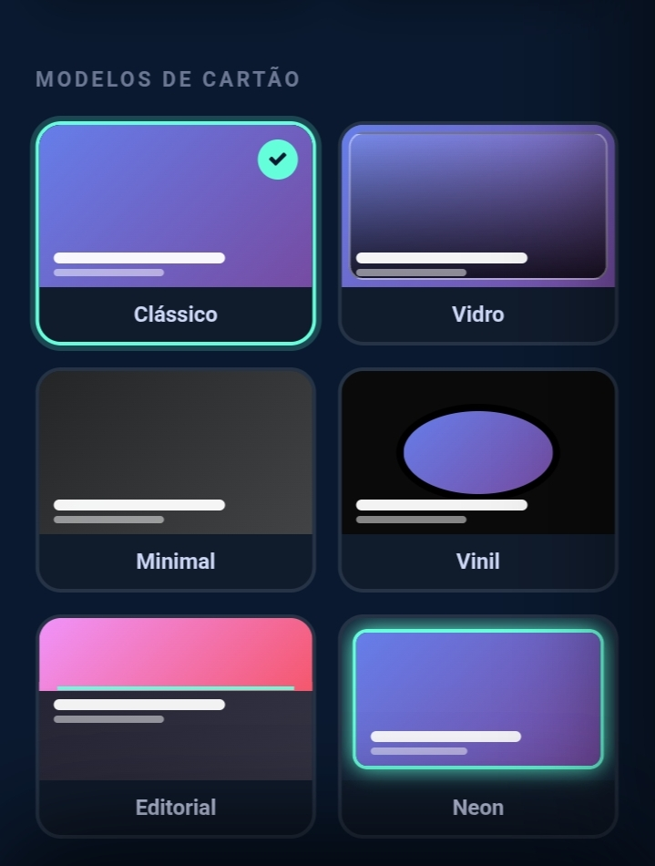
Detalhe do cartão com capa e barra de progresso
- Se a música não tiver capa embutida, aparece um ícone 🎵 num fundo colorido.
- Para adicionar uma capa manual, use ⋯ → Editar metadados → Escolher capa.
- Toque na barra de progresso no fundo do cartão para saltar para qualquer ponto da música.
4.2 Swipe entre faixas
Pode mudar de música deslizando o cartão horizontalmente.
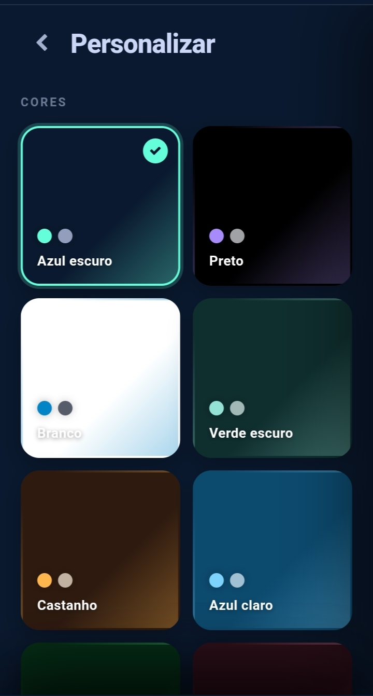
Deslize o cartão para a esquerda ou para a direita (setas ilustrativas)
- Deslizar para a direita → volta à faixa anterior
- Deslizar para a esquerda → avança para a próxima faixa
Leitor Offline — Manual4. Player
4.3 Fila de reprodução
Toque no ícone ☰ no canto superior direito do player para abrir a lista completa da fila.
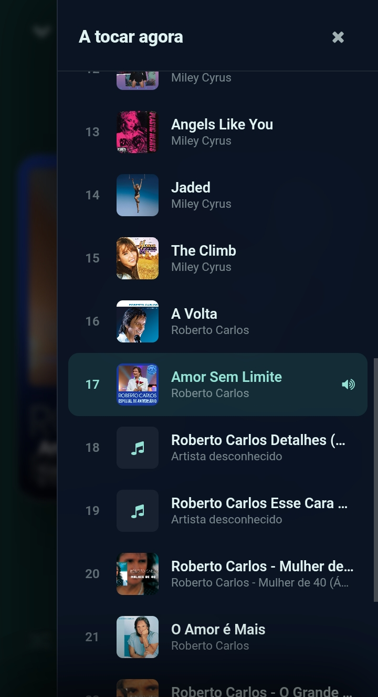
Painel lateral com a fila de reprodução
A fila mostra todas as músicas que vão tocar a seguir, com a faixa atual destacada a verde. Toque em qualquer música da lista para saltar diretamente para ela. A fila corresponde sempre à lista de onde veio a música:
- Tocou em Todas? A fila é a lista completa.
- Tocou em Lista de reprodução? A fila são os seus favoritos.
- Tocou numa pasta? A fila é só a música dessa pasta.
- Tocou em Recentes? A fila segue a ordem dos recentes.
🔄 Aleatório e repetirOs botões no rodapé do player controlam a reprodução aleatória e a repetição de faixas.
4.4 Controlos na notificação
Com a música a tocar e a aplicação em segundo plano, aparece uma notificação (ou um widget no ecrã de bloqueio) com Play / Pause, Anterior / Próxima, e o título, artista e capa da faixa. Funcionam também nos auscultadores, no carro e em relógios compatíveis.
📱 Ecrã desligadoA reprodução continua a avançar de faixa em faixa com o ecrã desligado, e os botões do ecrã de bloqueio respondem.
Leitor Offline — Manual4.3 — 4.4
4.5 Continuar de onde parou
Ao fechar e voltar a abrir a aplicação, ela repõe a última sessão: a mesma música, a mesma fila e o ponto exato onde ficou. A música não toca sozinha — o mini-player aparece em pausa e basta tocar em play.
💡 Como funcionaA posição é guardada a cada poucos segundos, ao pausar e ao sair do ecrã. Se a música tiver sido removida, a sessão não é reposta.
4.6 Volume
O volume ajustado no player é guardado e reposto da próxima vez que abrir a aplicação. Na primeira utilização começa a 80%.
4.7 Se uma música não tocar
Se um ficheiro não puder ser lido (corrompido, movido ou sem permissão), aparece o aviso "Não foi possível reproduzir esta música" e a aplicação passa à seguinte. Depois de 3 falhas seguidas, para.
Leitor Offline — Manual4.5 — 4.7
5. Funcionalidades Avançadas
A barra de ferramentas superior do player dá acesso às funcionalidades extra, a qualquer momento durante a reprodução.
5.1 Equalizador
Toque no ícone de sliders para abrir o equalizador de 5 bandas.
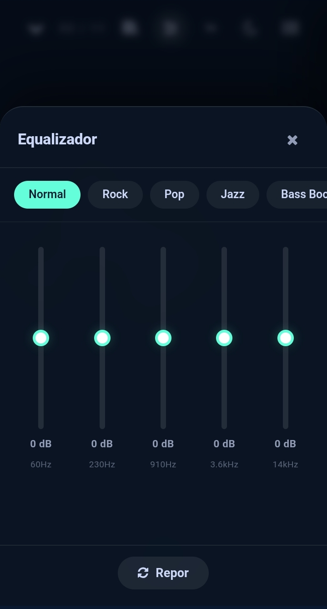
Equalizador com presets no topo e 5 sliders
| Banda | Frequência | Efeito |
|---|
| Graves | 60 Hz | Aumenta ou corta o baixo profundo |
| Baixos | 230 Hz | Controla a presença dos instrumentos graves |
| Médios | 910 Hz | Foco na voz e nos instrumentos principais |
| Altos | 3.6 kHz | Realça a clareza e definição |
| Brilho | 14 kHz | Aumenta a "abertura" e o ar da música |
Os presets aplicam combinações prontas: Normal, Rock, Pop, Jazz, Bass Boost, Vocal, Eletrónica, Clássica. Tocar num slider passa a "Personalizado".
🔋 Só quando precisaO equalizador só entra em ação quando abre o painel ou quando já tem ajustes guardados. Com tudo no Normal, a música toca sem processamento extra.
Leitor Offline — Manual5.1 Equalizador
5.2 Velocidade de reprodução
Toque no botão 1× para escolher a velocidade, de 0.5× a 2.0×. O tom mantém-se, por isso a voz não fica "de esquilo". Se a velocidade não for 1×, o botão fica verde.
- 0.5× — útil para aprender letras ou estudar um solo
- 1.5× — ideal para podcasts e áudio-livros
5.3 Temporizador (sleep timer)
Toque no ícone de lua. A música para automaticamente depois do tempo escolhido.
| Opção | O que faz |
|---|
| 15 / 30 / 45 / 60 min | Para a música passado esse tempo |
| Fim da faixa | Para quando a música atual terminar |
| Desligar | Cancela o temporizador ativo |
Com o temporizador ativo aparece um badge com o tempo restante sobre a lua, por exemplo 28m.
💡 Utilização típicaPôr uma música a tocar antes de dormir e deixar o temporizador de 30 min fazer o resto.
Leitor Offline — Manual5.2 — 5.3
5.4 Letras (sincronizadas ou simples)
Toque no ícone de alinhamento para abrir o painel de letras. Na base há quatro botões redondos:
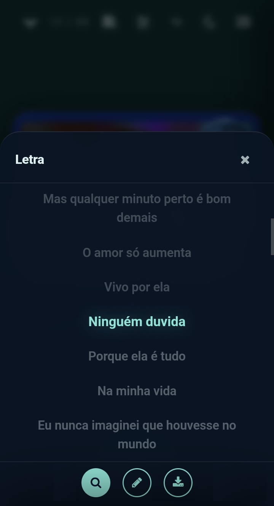
Letra sincronizada com a linha ativa destacada
| Botão | Função |
|---|
| 🌐 Traduzir | Mostra a tradução em português por baixo de cada linha (ver 5.5) |
| 🔍 Procurar online | Procura a letra na internet e guarda-a na música |
| ✏️ Editar | Escreve ou cola a letra à mão |
| ⬇ Importar | Carrega um ficheiro .lrc ou .txt do telemóvel |
Letra automática com ficheiro .lrc
Ao importar uma pasta, a aplicação procura ficheiros .lrc com o mesmo nome da música (Jar of Hearts.mp3 + Jar of Hearts.lrc). Se existirem, a letra fica ligada à música. Se tiver tempos, sincroniza: a linha atual fica destacada e o ecrã acompanha o canto.
ℹ️ Não é automático na internetA aplicação não procura letras sozinha. Use o botão 🔍 ou importe um .lrc. Se juntar ficheiros .lrc à pasta depois, importe a pasta outra vez.
Leitor Offline — Manual5.4 Letras
🔍 Procurar online
- Abra uma música e o painel de letras.
- Toque em 🔍. Precisa de internet nesse momento.
- A aplicação pesquisa no lrclib.net (serviço gratuito) pelo título e artista, e prefere letras sincronizadas.
- Aparece um aviso com "Artista – Título" para confirmar. A letra fica guardada e passa a abrir sem internet.
- Só aceita letras de duração parecida com a sua música (até 10 s de diferença), para os tempos baterem certo.
- Se já houver letra, a aplicação pergunta antes de substituir.
- Sem artista nas tags, a app usa o nome do ficheiro. Nomes do tipo
Artista - Título dão melhores resultados.
⬇ Importar um ficheiro
- Um ficheiro: vai para a música que está a tocar, com qualquer nome.
- Vários ficheiros: cada um liga-se à música com o mesmo nome. No fim, a app diz quantos ficaram ligados.
✏️ Editar manualmente
Cole ou escreva a letra. Pode incluir tempos para sincronizar. A letra manual tem prioridade sobre a de um .lrc. Para a remover, apague o texto e guarde.
Formato .lrc
Cada linha começa com o tempo entre parênteses retos:
[00:12.50] Primeira linha
[00:15.30] Segunda linha
[00:18.90] Terceira linha
Leitor Offline — Manual5.4 Letras (cont.)
5.5 Tradução para português
Toque em 🌐 para traduzir a letra. A tradução aparece por baixo de cada linha, mais pequena e em itálico, e acompanha o destaque e o scroll.

Letra sincronizada com tradução em português e os quatro botões
- Funciona com letras sincronizadas e com letras simples.
- Fica guardada na música. Depois, 🌐 liga e desliga a tradução, mesmo sem internet. O botão fica preenchido quando a tradução está visível.
- Se a letra já estiver em português, a app avisa e não faz nada.
- Se editar ou trocar a letra, a tradução antiga deixa de ser usada e pode traduzir de novo.
⚠️ Tradução automáticaUsa um serviço gratuito de tradução. Pode soar literal em expressões e gíria, e precisa de internet na primeira vez. Se o serviço falhar, a letra original continua normal.
Leitor Offline — Manual5.5 Tradução
6. Personalização
Toque no ícone de pincel no cabeçalho da biblioteca para abrir a tela "Personalizar".
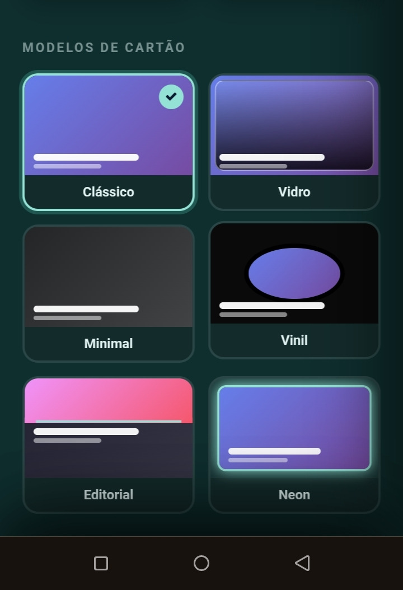
Tela de personalização: temas de cor
6.1 Cores e temas
A aplicação vem com 8 temas de cores:
🌙 Azul escuro
Padrão. Fundo azul meia-noite com destaque em verde-menta.
⬛ Preto
Ecrã OLED. Poupa bateria em ecrãs AMOLED.
⚪ Branco
Modo claro completo para ambientes muito iluminados.
🌿 Verde escuro
Tons profundos de floresta com destaques suaves.
🍂 Castanho
Paleta quente em tons de madeira e ouro.
🌊 Azul claro
Contraste alto, sensação limpa e moderna.
🍀 Verde
Verde fresco e vibrante com destaque luminoso.
🌹 Vermelho escuro
Bordô profundo com rosa pálido nos destaques.
Leitor Offline — Manual6.1 Cores
6.2 Modelos de cartão
O cartão do player tem 6 modelos diferentes. Cada um muda por completo a estética da tela de reprodução.
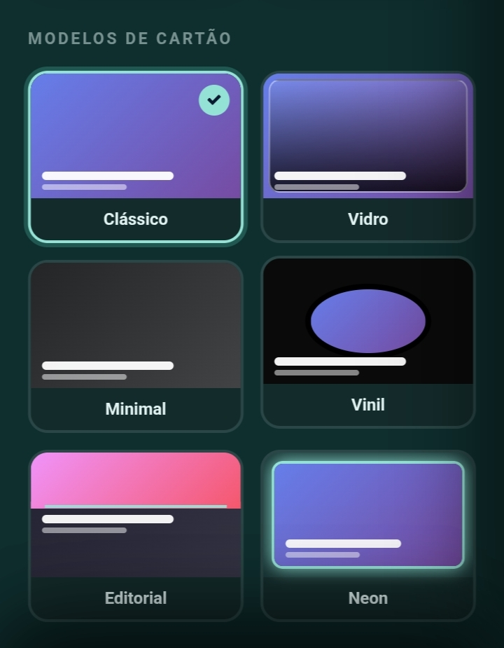
Os seis modelos de cartão
| Modelo | Descrição |
|---|
| Clássico | Cantos arredondados 22px, gradiente escuro em baixo, layout standard. |
| Vidro | Borda luminosa, blur suave, gradiente translúcido no topo. |
| Minimal | Cantos retos (4px), gradiente curto, tipografia fina. |
| Vinil | Forma elíptica, borda preta grossa, anel interno simulando disco. |
| Editorial | Capa só na metade superior, título grande em fundo sólido com borda de destaque. |
| Neon | Borda brilhante na cor do tema, glow colorido ao redor do cartão. |
Os 6 modelos de cartão: Clássico, Vidro, Minimal, Vinil, Editorial e Neon
💾 A sua escolha é lembradaO tema e o modelo de cartão ficam guardados no dispositivo, e também entram no backup (secção 8).
Leitor Offline — Manual6.2 Modelos
7. Gestão da Biblioteca
7.1 Favoritos
Toque no coração do lado direito de cada linha da lista.
- O coração fica vermelho quando ativo.
- Todas as favoritas aparecem na aba Lista de reprodução.
- Também pode marcar no player grande, no canto superior direito do cartão.
7.2 Remover e restaurar
Toque no ⋯ e escolha Remover da biblioteca.
⚠️ O ficheiro original não é apagadoA música desaparece da aplicação, mas continua intacta na pasta do dispositivo.
Depois de remover, aparece um aviso com ANULAR durante 4 segundos.
Lixeira
A aba Removidas aparece quando há pelo menos uma música na lixeira. Aí pode:
- Restaurar uma música (ícone ↩️) ou todas de uma vez
- Eliminar definitivamente (⋯ → Eliminar definitivamente)
Leitor Offline — Manual7. Gestão
7.3 Editar metadados
A aplicação lê o artista e o título das tags dos ficheiros. Se estiverem errados, ou se quiser uma capa manual, use Editar metadados no menu ⋯. O que editar tem prioridade sobre as tags.
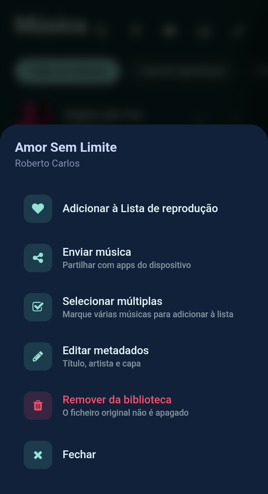
Menu de contexto com todas as opções
- Título — o nome mostrado na lista e no player
- Artista — quem canta ou produziu
- Capa — uma imagem da galeria, que substitui a embutida
✏️ Edição não-destrutivaAs alterações ficam guardadas na aplicação e não modificam o ficheiro original.
Enviar música
Enviar música abre o menu de partilha do sistema: WhatsApp, Telegram, Gmail, Bluetooth, ou guardar numa pasta.
Leitor Offline — Manual7.3 Metadados
8. Backup e Estatísticas
8.1 Exportar e importar
Toque no ícone da nuvem no cabeçalho da biblioteca.
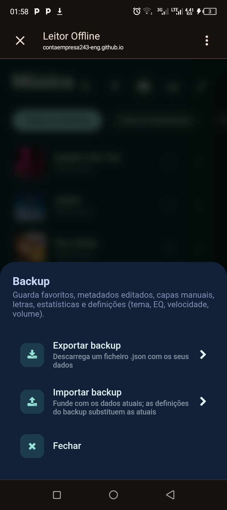
Painel com exportar e importar
Exportar backup
Gera um ficheiro .json com:
- Favoritos e histórico de recentes
- Letras escritas ou importadas
- Metadados editados (título, artista, capas manuais)
- Estatísticas de audição (histórico de reproduções)
- Definições: tema, modelo de cartão, equalizador, velocidade e volume
O ficheiro vai para a pasta Downloads. As músicas em si não entram no backup, só os dados da app.
Importar backup
A aplicação junta os dados do ficheiro aos atuais: nada é apagado. As estatísticas somam-se sem duplicar. As definições do backup substituem as atuais.
💡 Migração entre dispositivosExporte no telemóvel A, envie o ficheiro para o B, importe no B. Os backups antigos continuam a funcionar.
Leitor Offline — Manual8.1 Backup
8.2 Estatísticas de audição
Toque no ícone de gráfico no cabeçalho da biblioteca.
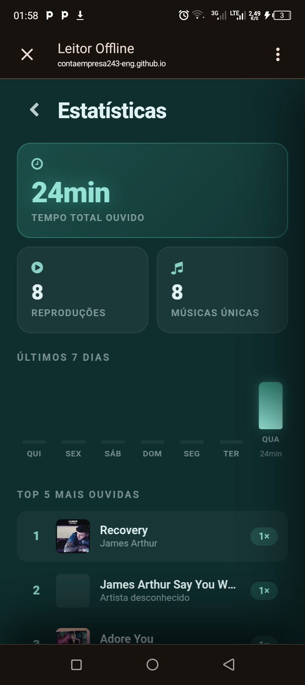
Estatísticas com resumo, gráfico, top 5 e histórico
- Resumo — tempo total ouvido, reproduções e músicas únicas
- Últimos 7 dias — gráfico de barras com os minutos por dia
- Top 5 — as mais reproduzidas; toque para tocar de imediato
- Audições recentes — as 20 últimas, com tempo relativo ("há 5 min")
📊 Registo automáticoUma reprodução só é registada se a música tocar pelo menos 10 segundos.
Leitor Offline — Manual8.2 Estatísticas
9. Atalhos de Teclado
Num computador, pode controlar a reprodução com o teclado.
| Tecla | Ação |
|---|
| Espaço | Play / Pause |
| ← | Música anterior |
| → | Próxima música |
| Esc | Fechar qualquer painel aberto |
💡 DicaOs atalhos funcionam desde que nenhum campo de texto esteja em foco.
Auscultadores
- Play / Pause — um toque no botão central
- Próxima faixa — dois toques rápidos
- Faixa anterior — três toques rápidos
Leitor Offline — Manual9. Atalhos
10. Instalação como PWA
O Leitor Offline pode ser instalado como uma aplicação nativa, com ícone próprio e em ecrã completo.
Porque instalar?
- Ícone no ecrã principal e ecrã completo, sem barras do browser
- Funciona 100% offline — ícones, bibliotecas e a própria app ficam guardados no dispositivo
- Armazenamento protegido — a app pede ao sistema para não apagar a sua biblioteca
Android (Chrome)
- Abra
contaempresa243-eng.github.io/Leitor-de-musica-offline-/ no Chrome - Toque no menu ⋮
- Escolha Instalar aplicação ou Adicionar ao ecrã principal
- Confirme e toque em Instalar
iPhone / iPad (Safari)
- Abra o mesmo endereço no Safari
- Toque em Partilhar (quadrado com seta)
- Escolha Adicionar ao ecrã principal e confirme
Computador (Chrome / Edge)
- Abra a aplicação
- Clique no ícone de instalação na barra de endereço e confirme
🔄 Primeira vez e atualizaçõesAbra a aplicação com internet uma vez para ela guardar tudo; depois funciona sem rede. Quando houver uma versão nova, ela é obtida com internet. Se parecer desatualizada, feche-a e abra outra vez.
Leitor Offline — Manual10. Instalação
11. Perguntas Frequentes
As capas não aparecem. O que fazer?
Algumas músicas têm a capa num formato que a aplicação não lê. Use ⋯ → Editar metadados → Escolher capa e adicione uma imagem manual.
Posso usar a aplicação sem internet?
Sim. Depois da primeira abertura com internet, tudo funciona offline. Só procurar e traduzir letras precisam de rede.
A minha música não toca. Porquê?
Verifique se o formato é MP3, M4A, OGG ou WAV. A app avisa quando não consegue tocar um ficheiro e passa à seguinte.
Onde ficam guardados os meus dados?
No armazenamento local do dispositivo (IndexedDB). Se limpar os dados do browser, a biblioteca e os favoritos desaparecem — faça backups regularmente.
Como faço uma cópia de segurança?
Use o botão ☁️ no cabeçalho. Guarde o .json no Google Drive, envie-o por email ou copie-o para o computador.
Posso usar em vários dispositivos?
Sim, mas cada dispositivo tem a sua biblioteca. Para levar favoritos, letras, estatísticas e definições, exporte de um e importe no outro.
Leitor Offline — Manual11. FAQ
Aparece "Sem espaço". O que significa?
O armazenamento do dispositivo está cheio e algumas músicas não puderam ser guardadas na biblioteca. Liberte espaço e importe a pasta outra vez.
A letra encontrada não é a da minha música
Confira o aviso "Artista – Título". Corrija o artista em Editar metadados e procure de novo, ou use ✏️ ou ⬇ para pôr a letra certa.
Para onde vão os dados quando procuro ou traduzo?
Procurar envia o título e o artista ao lrclib.net. Traduzir envia o texto da letra a um serviço de tradução. Nenhum ficheiro de música é enviado.
Os controlos na notificação não aparecem
No Android, permita notificações ao browser (ou à app instalada). No iPhone funciona melhor instalada como PWA (secção 10).
Como apago definitivamente uma música da lixeira?
Na aba Removidas, toque em ⋯ e escolha Eliminar definitivamente. Não tem retorno.
Leitor Offline — Manual11. FAQ (cont.)
🎧
Obrigado!
Boa música e boas descobertas.
Este manual refere-se à versão 1.1 do Leitor Offline. Se encontrar algum erro, ou quiser sugerir uma funcionalidade nova, contacte o autor através da página do projeto.